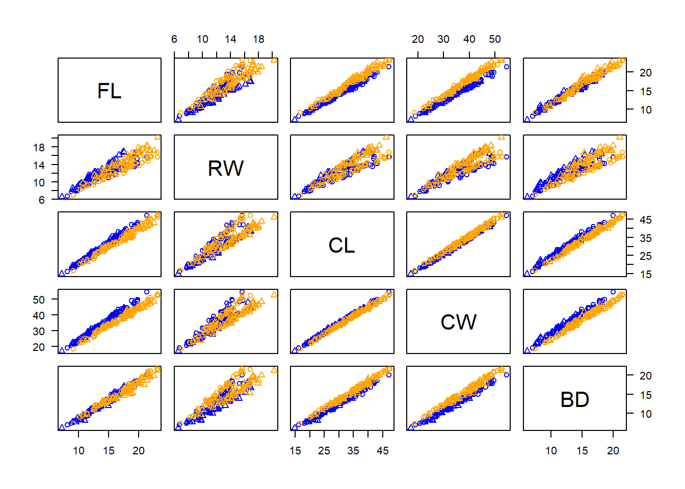
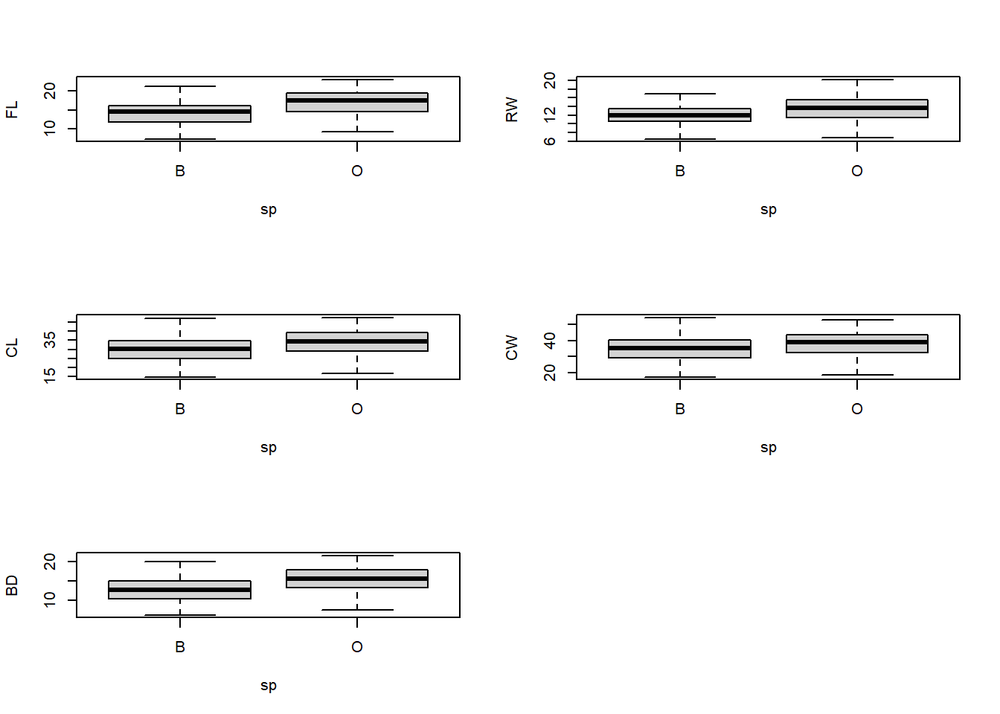
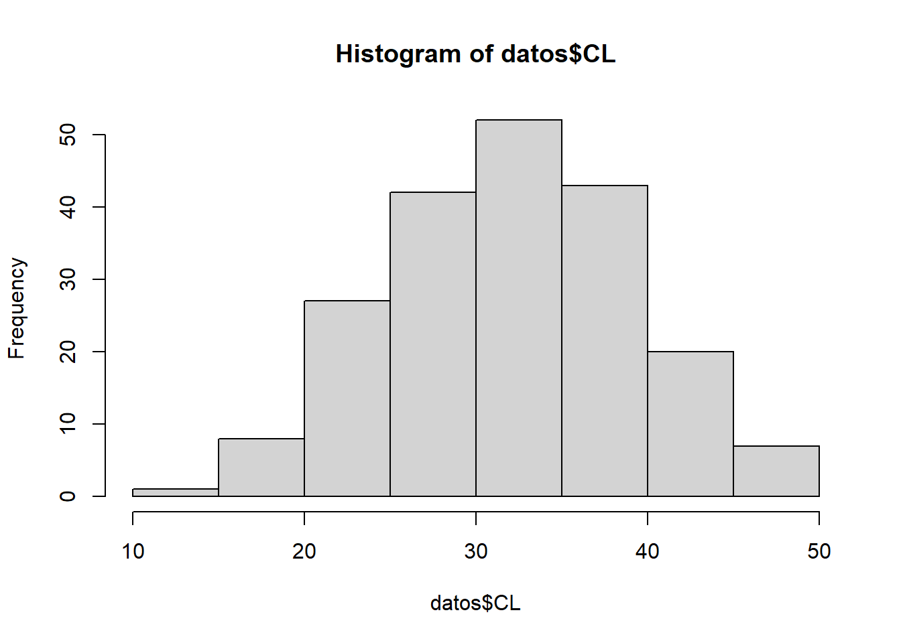
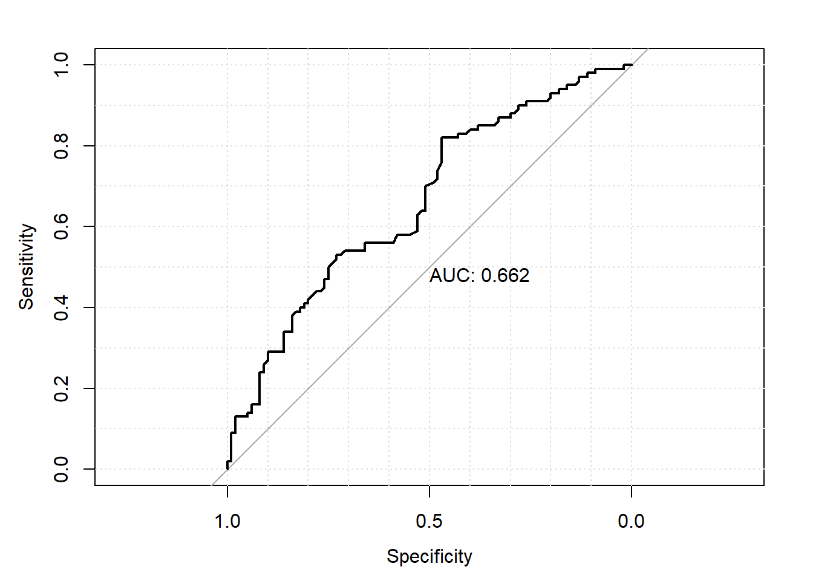
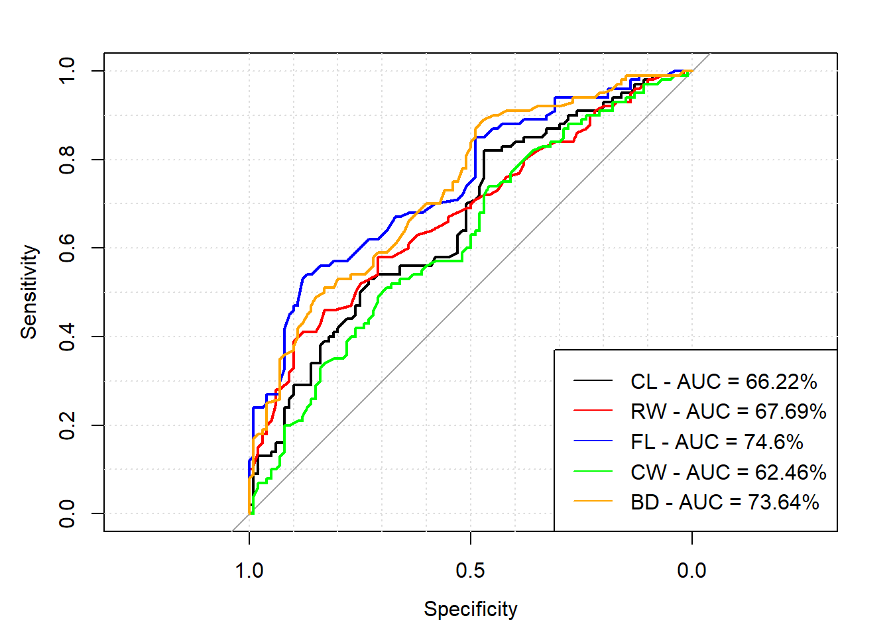

En esta sesión se trabajará con el conjunto crabs de la librería MASS.
library(MASS)head(crabs) # muestra las primeras seis filas de un df## sp sex index FL RW CL CW BD
## 1 B M 1 8.1 6.7 16.1 19.0 7.0
## 2 B M 2 8.8 7.7 18.1 20.8 7.4
## 3 B M 3 9.2 7.8 19.0 22.4 7.7
## 4 B M 4 9.6 7.9 20.1 23.1 8.2
## 5 B M 5 9.8 8.0 20.3 23.0 8.2
## 6 B M 6 10.8 9.0 23.0 26.5 9.8summary(crabs)## sp sex index FL RW CL
## B:100 F:100 Min. : 1.0 Min. : 7.20 Min. : 6.50 Min. :14.70
## O:100 M:100 1st Qu.:13.0 1st Qu.:12.90 1st Qu.:11.00 1st Qu.:27.27
## Median :25.5 Median :15.55 Median :12.80 Median :32.10
## Mean :25.5 Mean :15.58 Mean :12.74 Mean :32.11
## 3rd Qu.:38.0 3rd Qu.:18.05 3rd Qu.:14.30 3rd Qu.:37.23
## Max. :50.0 Max. :23.10 Max. :20.20 Max. :47.60
## CW BD
## Min. :17.10 Min. : 6.10
## 1st Qu.:31.50 1st Qu.:11.40
## Median :36.80 Median :13.90
## Mean :36.41 Mean :14.03
## 3rd Qu.:42.00 3rd Qu.:16.60
## Max. :54.60 Max. :21.60Se excluye la variable index:
datos<-crabs[,-3]summary(datos)## sp sex FL RW CL CW
## B:100 F:100 Min. : 7.20 Min. : 6.50 Min. :14.70 Min. :17.10
## O:100 M:100 1st Qu.:12.90 1st Qu.:11.00 1st Qu.:27.27 1st Qu.:31.50
## Median :15.55 Median :12.80 Median :32.10 Median :36.80
## Mean :15.58 Mean :12.74 Mean :32.11 Mean :36.41
## 3rd Qu.:18.05 3rd Qu.:14.30 3rd Qu.:37.23 3rd Qu.:42.00
## Max. :23.10 Max. :20.20 Max. :47.60 Max. :54.60
## BD
## Min. : 6.10
## 1st Qu.:11.40
## Median :13.90
## Mean :14.03
## 3rd Qu.:16.60
## Max. :21.60datos_colnum<-datos[,c("FL","RW","CL","CW","BD")] # se seleccionan las variables numéricas
apply(datos_colnum,2,sd) # se obtienen las desv. est.## FL RW CL CW BD
## 3.495325 2.573340 7.118983 7.871955 3.424772color_c<-ifelse(datos$sp=="B","blue","orange")
marcador_sexo<-ifelse(datos$sex=="M",1,2)
pairs(datos_colnum,col=color_c,pch=marcador_sexo,las=1)
par(mfrow=c(3,2))
boxplot(FL~sp,data=datos)
boxplot(RW~sp,data=datos)
boxplot(CL~sp,data=datos)
boxplot(CW~sp,data=datos)
boxplot(BD~sp,data=datos)
hist(datos$CL)
summary(datos$CL)## Min. 1st Qu. Median Mean 3rd Qu. Max.
## 14.70 27.27 32.10 32.11 37.23 47.60Categorizar la variable CL:
datos$CL_cat<-cut(datos$CL,breaks=c(14,32,48),labels = c("bajo","medio"))table(datos$sp,datos$CL_cat)##
## bajo medio
## B 58 42
## O 42 58clasificador=function(CL_cat)
if (CL_cat=="bajo"){
return("B")}else{
return("O")
}prediccion<-sapply(datos$CL_cat,clasificador)Matriz de confusión:
(Matriz_conf<-table(datos$sp,prediccion))## prediccion
## B O
## B 58 42
## O 42 58Tasa de clasificación correcta:
(TCC<-sum(diag(Matriz_conf))/sum(Matriz_conf))## [1] 0.58Sensibilidad:
# TP/(TP+FN)
(Sensibilidad<-Matriz_conf[1,1]/sum(Matriz_conf[1,]))## [1] 0.58Especificidad:
# TN/(TN+FP)
(Especificidad<-Matriz_conf[2,2]/sum(Matriz_conf[,2]))## [1] 0.58Lo vamos a hacer automáticamente para diferentes valores de corte de la variable CL:
library(pROC)Construyamos la curva ROC para la variable CL:
roc_CL<-roc(sp~CL,data=datos)## Setting levels: control = B, case = O## Setting direction: controls < casesprint(roc_CL)##
## Call:
## roc.formula(formula = sp ~ CL, data = datos)
##
## Data: CL in 100 controls (sp B) < 100 cases (sp O).
## Area under the curve: 0.6622auc_CL<-auc(roc_CL)
plot(roc_CL,identity=TRUE,print.auc=TRUE,grid=TRUE)
roc_RW<-roc(sp~RW,data=datos)## Setting levels: control = B, case = O## Setting direction: controls < casesroc_FL<-roc(sp~FL,data=datos)## Setting levels: control = B, case = O
## Setting direction: controls < casesroc_CW<-roc(sp~CW,data=datos)## Setting levels: control = B, case = O
## Setting direction: controls < casesroc_BD<-roc(sp~BD,data=datos)## Setting levels: control = B, case = O
## Setting direction: controls < casesplot(roc_CL,identity=TRUE,grid=TRUE,xlim=c(1,0))
plot(roc_RW,add=TRUE,col="red")
plot(roc_FL,add=TRUE,col="blue")
plot(roc_CW,add=TRUE,col="green")
plot(roc_BD,add=TRUE,col="orange")
legend("bottomright",col=c("black","red","blue","green","orange"),
lty=1,
legend=c(paste0("CL - AUC = ",round(auc(roc_CL)*100,digits = 2),"%"),
paste0("RW - AUC = ",round(auc(roc_RW)*100,digits = 2),"%"),
paste0("FL - AUC = ",round(auc(roc_FL)*100,digits = 2),"%"),
paste0("CW - AUC = ",round(auc(roc_CW)*100,digits = 2),"%"),
paste0("BD - AUC = ",round(auc(roc_BD)*100,digits = 2),"%")))
Tarea: comparar las AUCs de los cinco clasificadores (uno a partir de cada variable)
Acabamos de ver el clasificador 1R. Veamos cómo es su implementación en R.
Separar el conjunto de datos en entrenamiento y validación:
N<-dim(datos)[1]
p<-0.2 # fracción para validación
set.seed(20200514)
ix_vl<-sample(N,round(N*p),replace = FALSE)
datos_tr<-datos[-ix_vl,-c(2,8)]
datos_vl<-datos[ix_vl,-c(2,8)]library(OneR)crabs1R<-OneR(sp~.,data=datos_tr)summary(crabs1R)##
## Call:
## OneR.formula(formula = sp ~ ., data = datos_tr)
##
## Rules:
## If FL = (8.08,11.1] then sp = B
## If FL = (11.1,14.1] then sp = B
## If FL = (14.1,17.1] then sp = B
## If FL = (17.1,20.1] then sp = O
## If FL = (20.1,23.1] then sp = O
##
## Accuracy:
## 113 of 160 instances classified correctly (70.62%)
##
## Contingency table:
## FL
## sp (8.08,11.1] (11.1,14.1] (14.1,17.1] (17.1,20.1] (20.1,23.1] Sum
## B * 14 * 22 * 31 11 1 79
## O 4 14 17 * 28 * 18 81
## Sum 18 36 48 39 19 160
## ---
## Maximum in each column: '*'
##
## Pearson's Chi-squared test:
## X-squared = 34.018, df = 4, p-value = 7.39e-07pred_vl<-ifelse(datos_vl$FL<=17.1,"B","O")(mat_conf_vl<-table(datos_vl$sp,pred_vl))## pred_vl
## B O
## B 19 2
## O 11 8(acc_vl<-sum(diag(mat_conf_vl))/sum(mat_conf_vl))## [1] 0.675